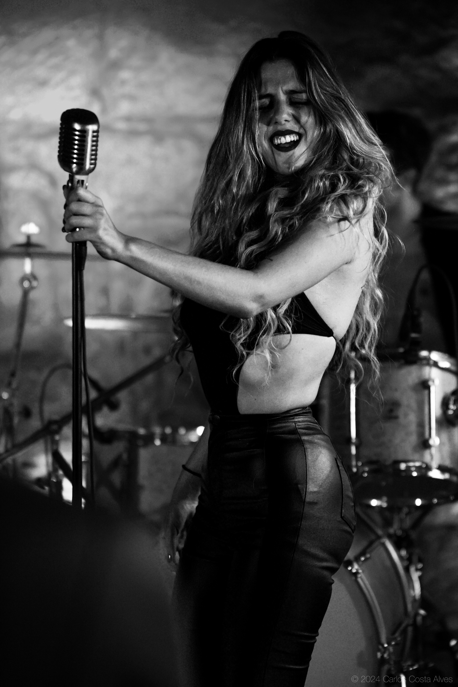

01Presença feminina visceral Raw stage presence
Voz feminina frontal, riffs intensos e uma entrega física que transforma o blues rock numa experiência de palco direta, quente e memorável. A frontal voice, intense riffs and a physical delivery that turn blues rock into a direct, heated and memorable stage experience.